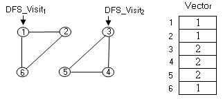
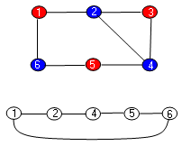
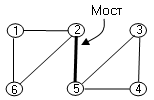

|
|
|
|
|
Задача обнаружения циклов в графе Задача определения простого пути между вершинами Задача подсчета связных компонент Задача определения принадлежности двух вершин одной связной компоненте Задача определения двудольности графа Задача определения реберной связности графа Задача определения двусвязности графа Задача определения гамильтонова цикла
Многие задачи исследующие свойства графов, используют в качестве базового алгоритма обход графа в глубину с построением остовного дерева в глубину или леса и классификацию ребер остовного леса или дерева [4].
Задача обнаружения циклов в графеВ
процессе поиска в глубину при
обнаружении первого же обратного
ребра (u, v), у которого d[v] < d[u] и p[v]
Задача определения простого пути между вершинамиДля заданной пары вершин u и v задача решается в процессе обхода в глубину от вершины. Если в процессе обхода встретится вершина v, то простой путь между вершинами u и v существует и его можно построить по ссылкам на предшественников, сформированных в вершинах графа.
Задача о простой связностиЗадача отвечает на вопрос, существуют ли пути в неориентированном графе между каждой парой вершин. Если единственный вызов функции DFS_Visit формирует дерево, включающее все вершины графа, то граф представляет собою единую связную компоненту, в которой существуют пути между каждой парой вершин.
Задача подсчета связных компонентВ процессе обхода в глубину в функции полного обхода в глубину DFS подсчитывается число вызовов функции DFS_Visit. Это число соответствует числу отдельных связных компонент в неориентированном графе.
Задача определения принадлежности двух вершин одной связной компонентеВ процессе полного обхода в глубину DFS формируется вектор, индексированный номерами вершин. В векторе по номеру вершины заносится номер вызова функции DFS_Visit из функции полного обхода DFS, который обнаружил данную вершину. Если после завершения DFS в векторе для двух вершин u и v зафиксирован один и тот же номер вызова DFS_Visit, то они принадлежат одной связной компоненте. 
Этим же вектором можно воспользоваться для задач о простом пути, простой связности графа, о количестве и размере связных компонент.
Задача определения двудольности графаГраф называется двудольным, если можно разбить множество его вершин на такие два подмножества, что каждое ребро графа будет соединять вершины из разных подмножеств. Задача использует алгоритм полного обхода в глубину DFS, раскрашивая соседние уровни дерева обхода в глубину поочередно одним из двух цветов. При обнаружении обратного ребра, проверяется цвет двух вершин, объединенных этим ребром. Если вершины имеют одинаковый цвет, то граф не является двудольным. Если после завершения полного обхода в глубину таких ребер не обнаружено, граф является двудольным. С помощью поочередной раскраски вершин в два цвета в ходе обхода в глубину решаются также задачи раскраски вершин в два цвета, определения циклов нечетной длины. 
Задача определения реберной связности графаСвойство реберной связности отвечает на вопросы: существуют ли в связном графе два различных пути между любыми двумя вершинами или останется ли связным граф после удаления какого - либо ребра. Задача определяе, существуют ли в графе ребра - мосты. Ребро графа является мостом, если после его удаления граф разбивается на два не связанных между собой подграфа, то есть, на две отдельные связные компоненты. Граф называется реберно связным, если в нем отсутствуют мосты. И, наоборот, граф называется реберно отделимым. если у него есть ребра - мосты. Ребра - мосты называются ребрами отделимости. 
Чтобы выявить в графе ребра - мосты, достаточно применить обход в глубину. В дереве обхода в глубину ребро (u, v) является тогда и только тогда, когда не существует обратное ребро, которое соединяет одного из потомков вершины v с каким - либо предком вершины v в дереве обхода в глубину. Алгоритм поиска мостов [4] выполняет обход в глубину, фиксируя для каждой вершины помимо меток времени обнаружения (d[v]) и завершения обработки вершин (f[v]) также минимальное значение d[v] в цикле, в который входит вершина v - low[v]. Ребро (u, v) считается мостом, если после обхода у вершины v d[v] = low[v].
Search_Bridges(G)
1.
for для каждой вершины u 2. do color[u] ← БЕЛЫЙ 3. p[u] ← nil 4. low[u] ← -1 5. time ← 0 6. bridges ← 0
7. for для
каждой вершины u 8. do if color[u] = < БЕЛЫЙ 9. then DFS_Visit_Bridges (G, u, bridges) 10.bridges ← bridges - 1 11.return bridges
DFS_Visit_Bridges (G, u, bridges)1. color[u] ← СЕРЫЙ 2. time ← time + 1 3. d[u] ← time 4. low[u] ← d[u]
5.
for для каждой
вершины v
|
|
|